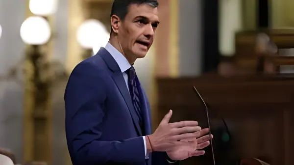

Face au retour d'un unilatéralisme américain assumé sous l'administration Trump II — droits de douane punitifs, pressions sur l'OTAN, ingérence dans les débats politiques européens — Pedro Sánchez a fait de la défense de la souveraineté européenne l'un des axes centraux de sa diplomatie. Entre fermeté rhétorique et pragmatisme économique, l'Espagne cherche sa voix dans un ordre mondial en recomposition.
Le retour de Donald Trump à la Maison Blanche en janvier 2025 a marqué une rupture nette dans les relations transatlantiques. L'administration Trump II a rapidement mis en œuvre une politique commerciale agressive, imposant des droits de douane généralisés sur les importations européennes — 10 % en base, avec des surtaxes sectorielles sur l'acier, l'aluminium et l'automobile. Pour l'Espagne, dont les exportations vers les États-Unis représentaient environ 28 milliards d'euros en 2024, l'impact est immédiat et douloureux, en particulier pour le secteur agro-alimentaire (olives, huile d'olive, vin) et les équipementiers automobiles.
Au-delà du commerce, Washington a multiplié les signaux d'une posture interventionniste : déclarations de membres de l'administration américaine sur la politique intérieure espagnole, notamment concernant la coalition gouvernementale Sánchez et ses alliés indépendantistes catalans, et pressions répétées pour que les membres de l'OTAN portent leurs dépenses de défense à 2 % du PIB — voire au-delà. L'Espagne, historiquement en retard sur cet objectif, s'est engagée à l'atteindre en 2025 mais sous contrainte budgétaire forte.
Face à ces pressions, Pedro Sánchez a adopté une ligne de fermeté publique rare parmi les dirigeants européens. Dans plusieurs discours au Parlement et en marge des sommets de l'UE, il a explicitement dénoncé ce qu'il qualifie d'ingérence dans les affaires intérieures européennes, ciblant notamment les déclarations de membres de l'administration américaine — et du milliardaire Elon Musk — qui avaient soutenu ouvertement le Parti Populaire espagnol et critiqué la coalition gouvernementale.
En janvier 2025, à la suite de tweets de Musk qualifiant le gouvernement Sánchez d'antidémocratique, le président du gouvernement espagnol a convoqué une réunion d'urgence du Conseil des ministres et prononcé un discours au Congrès dans lequel il a affirmé que l'Espagne ne tolérerait aucune forme d'ingérence extérieure, quelle qu'en soit la source. Cette sortie a été saluée par une partie de la gauche européenne et critiquée par la droite espagnole, qui y voyait une manœuvre de diversion face aux difficultés intérieures.
Retour de Trump. Annonce de droits de douane universels à 10 % sur les importations européennes. Musk attaque publiquement Sánchez sur les réseaux sociaux.
Sánchez convoque un conseil des ministres d'urgence et prononce un discours de défense de la souveraineté européenne. L'Espagne saisit la Commission européenne pour une réponse commerciale coordonnée.
L'UE adopte des contre-mesures ciblées. Madrid soutient activement la ligne dure de Bruxelles. Tensions sur l'objectif OTAN de 2 % : Sánchez annonce l'atteinte de l'objectif mais sous conditions budgétaires strictes.
Négociations commerciales UE-USA. L'Espagne plaide pour un accord excluant toute concession sur les normes alimentaires et environnementales. Réorientation partielle des exportations agro-alimentaires vers l'Asie et l'Afrique du Nord.
L'Espagne renforce ses partenariats avec le Maroc, l'Algérie et les pays d'Amérique latine. Sánchez se pose en champion d'un « multilatéralisme souverain » à l'échelle européenne.
La relation hispano-américaine se joue sur trois fronts simultanés. Le premier est commercial : les droits de douane américains frappent directement les secteurs d'exportation clés de l'Espagne. L'huile d'olive, dont l'Espagne est le premier producteur mondial, a vu ses ventes aux États-Unis chuter brutalement au premier trimestre 2025. Le secteur automobile — avec des équipementiers comme Gestamp ou Grupo Antolín très exposés au marché nord-américain — subit également les effets de la surtaxe sur les pièces détachées.
Le deuxième front est celui de la défense. L'OTAN exige depuis des années que ses membres consacrent 2 % de leur PIB à la défense. L'Espagne, qui oscillait autour de 1,3 % jusqu'en 2022, a accéléré son effort budgétaire mais se heurte aux résistances de la coalition gouvernementale — notamment du parti Sumar, opposé à la hausse des dépenses militaires. Sánchez marche sur une ligne de crête : satisfaire Washington et Bruxelles sans fracturer son gouvernement.
Le troisième front est numérique et réglementaire. Les grandes plateformes américaines (Meta, X/Twitter, Google) sont dans le viseur de la réglementation européenne, et l'administration Trump a clairement signifié son hostilité au Digital Services Act et au Digital Markets Act. Madrid soutient la Commission dans cette bataille, tout en gérant la pression diplomatique que Washington exerce sur les États membres les plus zélés dans l'application de ces textes.
| Dossier | Position espagnole | Tension avec Washington |
|---|---|---|
| Droits de douane | Contre-mesures coordonnées UE | Très élevée |
| Défense OTAN 2 % | Engagement conditionnel | Modérée |
| Régulation numérique | Soutien au DSA / DMA | Élevée |
| Gaza / Proche-Orient | Reconnaissance État palestinien | Très élevée |
| Ukraine | Soutien maintenu à Kiev | Faible à modérée |
Au-delà des enjeux économiques, c'est sur le dossier israélo-palestinien que la divergence hispano-américaine est la plus visible. En mai 2024, l'Espagne a officiellement reconnu l'État de Palestine, aux côtés de la Norvège et de l'Irlande — une décision saluée dans le monde arabe mais fraîchement reçue à Washington et Tel-Aviv. En 2025-2026, Sánchez a maintenu cette ligne, appelant à un cessez-le-feu permanent à Gaza et plaidant pour des sanctions européennes contre Israël en cas de violation du droit international humanitaire.
Cette posture a valu à l'Espagne d'être régulièrement citée par l'administration Trump comme un exemple de dérive « pro-terroriste » — une accusation rejetée catégoriquement par Madrid. Elle illustre une fracture géopolitique plus profonde : l'Espagne de Sánchez se positionne clairement dans un camp tiers-mondiste et multilatéraliste, à rebours de l'axe américain dominant au sein de l'OTAN.
« L'Europe doit apprendre à parler le langage de la puissance. Nous ne pouvons pas rester spectateurs d'un monde où la force prime sur le droit. »
— Pedro Sánchez, discours au Congrès des députés, février 2025« Ce n'est pas de l'anti-américanisme. C'est de la dignité européenne. »
— Pedro Sánchez, sommet du Conseil européen, mars 2025La posture de Sánchez face aux États-Unis révèle les limites et les possibles d'une souveraineté européenne en construction. L'Espagne peut adopter une ligne ferme en matière de discours, reconnaître la Palestine, défier Musk et critiquer les droits de douane — mais elle reste structurellement dépendante du parapluie sécuritaire américain via l'OTAN, et son économie demeure vulnérable aux décisions de Washington. La vraie question que pose cette confrontation n'est pas celle de la personnalité de Sánchez, mais celle de la capacité de l'Europe à se doter des instruments — commerciaux, militaires, numériques, financiers — d'une véritable indépendance stratégique. En 2025-2026, cette capacité reste encore largement à construire, et l'Espagne, malgré ses ambitions affichées, en est autant prisonnière que les autres.
Ante el regreso de un unilateralismo americano asumido bajo la administración Trump II — aranceles punitivos, presiones sobre la OTAN, injerencia en los debates políticos europeos — Pedro Sánchez ha convertido la defensa de la soberanía europea en uno de los ejes centrales de su diplomacia. Entre firmeza retórica y pragmatismo económico, España busca su voz en un orden mundial en recomposición.
El retorno de Donald Trump a la Casa Blanca en enero de 2025 supuso una ruptura neta en las relaciones transatlánticas. La administración Trump II puso rápidamente en marcha una política comercial agresiva, imponiendo aranceles generalizados sobre las importaciones europeas — 10 % de base, con sobretasas sectoriales en acero, aluminio y automóvil. Para España, cuyas exportaciones a Estados Unidos representaban unos 28.000 millones de euros en 2024, el impacto fue inmediato y doloroso, especialmente para el sector agroalimentario (aceitunas, aceite de oliva, vino) y los fabricantes de componentes de automóvil.
Más allá del comercio, Washington multiplicó las señales de una postura intervencionista: declaraciones de miembros de la administración americana sobre la política interna española, en particular sobre la coalición gubernamental Sánchez y sus aliados independentistas catalanes, y presiones reiteradas para que los miembros de la OTAN elevaran su gasto en defensa al 2 % del PIB.
Ante estas presiones, Pedro Sánchez adoptó una línea de firmeza pública inusual entre los dirigentes europeos. En varios discursos en el Parlamento y al margen de las cumbres de la UE, denunció explícitamente lo que califica de injerencia en los asuntos internos europeos, apuntando en particular a las declaraciones de miembros de la administración americana — y del multimillonario Elon Musk — que habían apoyado abiertamente al Partido Popular español y criticado la coalición gubernamental.
Vuelta de Trump. Anuncio de aranceles universales del 10 % sobre las importaciones europeas. Musk ataca públicamente a Sánchez en redes sociales.
Sánchez convoca un Consejo de Ministros de urgencia y pronuncia un discurso en defensa de la soberanía europea. España solicita a la Comisión Europea una respuesta comercial coordinada.
La UE adopta contramedidas selectivas. Madrid apoya activamente la línea dura de Bruselas. Tensiones sobre el objetivo OTAN del 2 %.
Negociaciones comerciales UE-EEUU. España aboga por un acuerdo sin concesiones en normas alimentarias ni medioambientales. Reorientación parcial de exportaciones hacia Asia y Norte de África.
España refuerza sus asociaciones con Marruecos, Argelia y Latinoamérica. Sánchez se erige en defensor de un «multilateralismo soberano» a escala europea.
La relación hispano-americana se juega en tres frentes simultáneos. El primero es comercial: los aranceles americanos golpean directamente los sectores exportadores clave de España. El aceite de oliva, del que España es el primer productor mundial, vio caer bruscamente sus ventas a Estados Unidos en el primer trimestre de 2025. El sector del automóvil — con fabricantes de componentes como Gestamp o Grupo Antolín muy expuestos al mercado norteamericano — también sufre los efectos de la sobretasa sobre las piezas de recambio.
El segundo frente es el de la defensa. La OTAN exige desde hace años que sus miembros destinen el 2 % de su PIB a la defensa. España, que oscilaba en torno al 1,3 % hasta 2022, ha acelerado su esfuerzo presupuestario pero se enfrenta a las resistencias de la coalición gubernamental, especialmente de Sumar. El tercer frente es digital y reglamentario: Madrid apoya a la Comisión en su batalla contra las grandes plataformas americanas, gestionando las presiones diplomáticas de Washington sobre los Estados miembros más activos en la aplicación del DSA y el DMA.
| Expediente | Posición española | Tensión con Washington |
|---|---|---|
| Aranceles | Contramedidas coordinadas UE | Muy alta |
| Defensa OTAN 2 % | Compromiso condicional | Moderada |
| Regulación digital | Apoyo al DSA / DMA | Alta |
| Gaza / Oriente Medio | Reconocimiento Estado palestino | Muy alta |
| Ucrania | Apoyo mantenido a Kiev | Baja a moderada |
Más allá de los intereses económicos, es en el expediente israelopalestino donde la divergencia hispano-americana resulta más visible. En mayo de 2024, España reconoció oficialmente el Estado de Palestina junto a Noruega e Irlanda. En 2025-2026, Sánchez mantuvo esta línea, pidiendo un alto el fuego permanente en Gaza y abogando por sanciones europeas contra Israel en caso de violación del derecho internacional humanitario.
« Europa debe aprender a hablar el lenguaje del poder. No podemos seguir siendo espectadores de un mundo donde la fuerza prima sobre el derecho. »
— Pedro Sánchez, discurso ante el Congreso de los Diputados, febrero de 2025« No es antiamericanismo. Es dignidad europea. »
— Pedro Sánchez, Consejo Europeo, marzo de 2025La postura de Sánchez frente a Estados Unidos pone de manifiesto los límites y las posibilidades de una soberanía europea en construcción. España puede adoptar una línea firme en el discurso, reconocer Palestina, desafiar a Musk y criticar los aranceles — pero sigue siendo estructuralmente dependiente del paraguas de seguridad americano a través de la OTAN, y su economía sigue siendo vulnerable a las decisiones de Washington. La verdadera pregunta que plantea esta confrontación no es la de la personalidad de Sánchez, sino la de la capacidad de Europa para dotarse de los instrumentos — comerciales, militares, digitales, financieros — de una verdadera independencia estratégica. En 2025-2026, esa capacidad está todavía en gran parte por construir, y España, pese a sus ambiciones declaradas, es tan prisionera de esa situación como los demás.